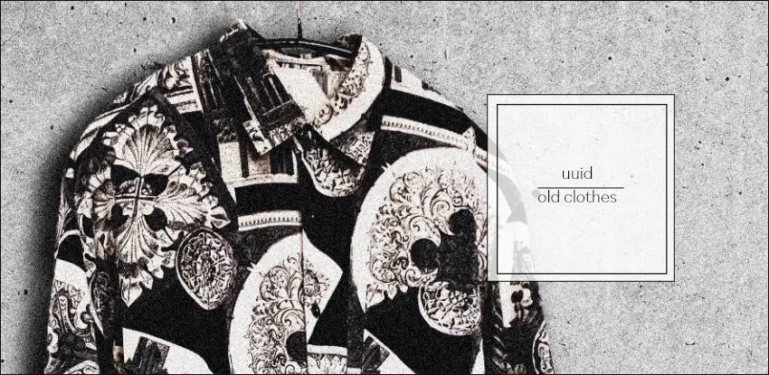
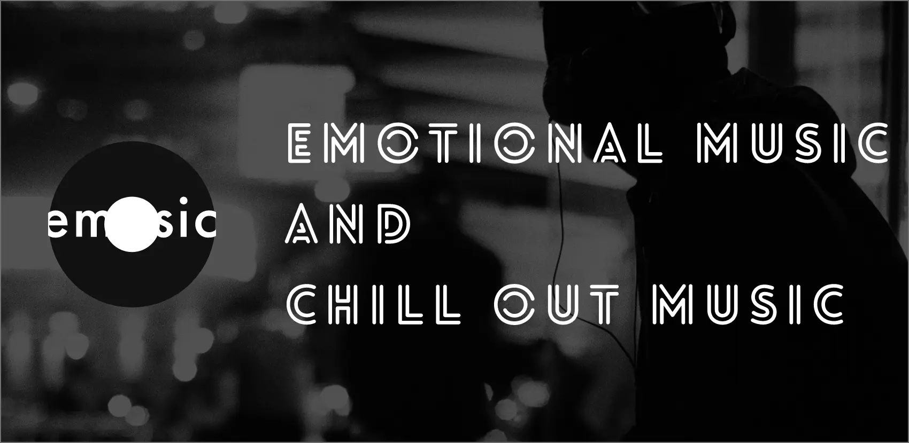
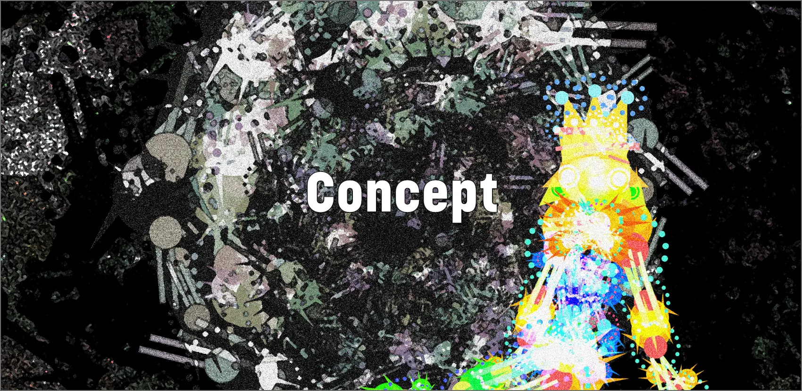
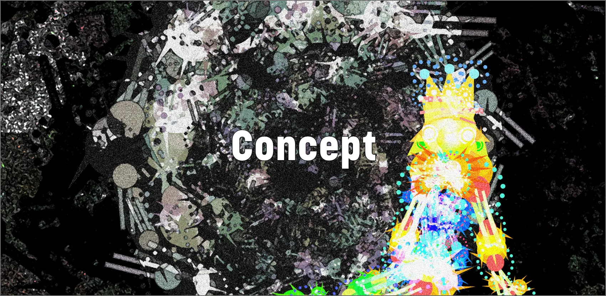
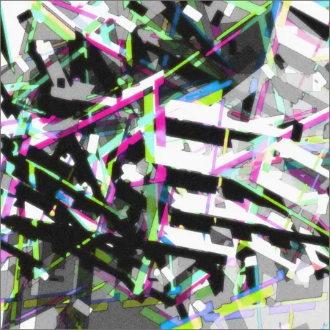

Works
これまでの制作物。作品詳細は画像から。
作品詳細内の画像から制作したWebサイトをご覧いただけます。


 


emosic
- category:Website
- tools:XD Photoshop illustrator VSCode
架空のサブスクリプションサービス「emosic」のWebサイト。
Kikagaku Art Lab.
- category:Website
- tools:test
自身で制作した幾何学模様を用いた画像作品のポートフォリオサイト(作成予定)。
Concept
この世界はたくさんの色で出来ています。
文字通り色彩、人々や物にある個性。
私はその個性を大切にしたいと考えています。
私の色を貫きつつ、ニーズとの調和の取れたものづくりをする。
サイト名の「Consistency」はそんな目標が由来になっています。
少しでも私の色に興味を持って頂ければ幸いです。
close